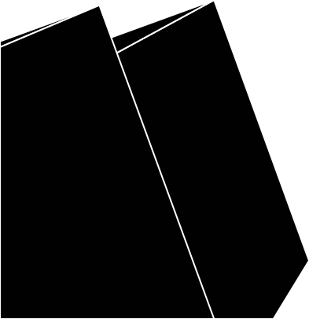
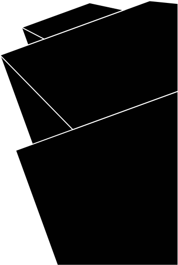

MAKING
HUMANS AN
INTERPLANETARY
SPECIES
26–30 September 2016
IAC Guadelajara, Mexico
IAC Guadelajara, Mexico
SpaceX Founder, CEO, and Lead Designer Elon Musk
will discuss the long-term technical challenges that need
to be solved to support the creation of a permanent,
self-sustaining human presence on Mars. The technical
presentation will focus on potential architectures for
sustaining humans on the Red Planet that industry, gov-
ernment and the scientific community can collaborate
on in the years ahead.